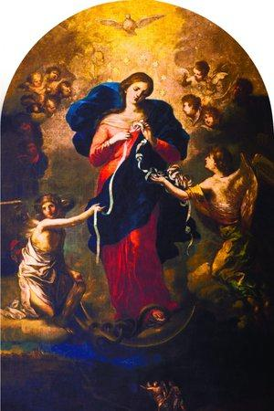

Morning Prayers
Pray the Psalm 91
Pray the Psalm 23
Psalm 65 – Thanksgiving for the Lord's Blessings
1Praise awaits You, our God, in Zion; to You our vows will be fulfilled.
2You who answer prayers, to you all people will come.
3When we were overwhelmed by sins, you forgave our transgressions.
4Blessed are those you choose and bring near to live in your courts!
We are filled with the good things of your house, of your holy temple.
5You answer us with awesome and righteous deeds,
God our Savior,the hope of all the ends of the earth and of the farthest seas,
6who formed the mountains by your power, having armed yourself with strength,
7who stilled the roaring of the seas, the roaring of their waves, and the turmoil of the nations.
8The whole earth is filled with awe at your wonders;
where morning dawns, where evening fades, you call forth songs of joy.
9You care for the land and water it; you enrich it abundantly.
The streams of God are filled with water to provide the people with grain,
for so you have ordained it.
10You drench its furrows and level its ridges; you soften it with showers and bless its crops.
11You crown the year with your bounty, and your carts overflow with abundance.
12The grasslands of the wilderness overflow; the hills are clothed with gladness.
13The meadows are covered with flocks and the valleys are mantled with grain; they shout for joy and sing!
Psalm 126 - Thanksgiving for Return from Captivity
1 When the LORD brought back the captive ones of Zion,
We were like those who dream.
2 Then our mouth was filled with laughter
And our tongue with joyful shouting;
Then they said among the nations,
"The LORD has done great things for them."
3 The LORD has done great things for us; We are glad.
4 Restore our captivity, O LORD, As the streams in the South.
5 Those who sow in tears shall reap with joyful shouting.
6 He who goes to and fro weeping, carrying his bag of seed,
Shall indeed come again with a shout of joy,
bringing his sheaves with him.
Holy Spirit, you who make us see everything and show us the way to reach our ideals. You who give us the divine gift to forgive and forget the wrong that is done to us and you who are in all instances of our lives with us. In this short dialogue, we want to thank you for everything, and confirm once more that we never want to be seperated from you, no matter how great the material desires may be. We want to be with you and our loved ones in your perpetual glory. Amen
Novena to Our Mother of Perpetual Help
Oh Mother of Perpetual Help, grant that we may ever invoke your powerful name, the protection of the living and the salvation of the dying. O Purest Mary! O sweetest Mary! let your name henceforth be ever on our lips. Delay not, Blessed Lady, to succour us whenever we call on you. In all our temptations, in all our needs, we will never cease to call on you, ever repeating your sacred name, Mary, Mary.
Oh what a consolation, what sweetness, what confidence, what emotion fill our souls when we utter your sacred name or even only think of you! We thank the Lord for having given you so sweet, so powerful, so lovely a name. But we will not be content with merely uttering your name. Let our love for you prompt us ever to hail you Mother of Perpetual Help.
Mother of Perpetual Help, pray for us and grant us the favor we confidently ask of you (mention request here).
Hail Mary (3x)
When needing an answer to prayers quickly and without delay, Mother Teresa of Calcutta famously prayed a “Flying” novena.
This is a simple and quick way to pray a ‘novena’ when you don’t have the full nine days! How do you pray this novena? Well, Mother Teresa would pray the, Memorare prayer nine times in a row rather than praying it once a day for 9 days.
Her religious sisters, the Missionaries of Charity, continue this practice today. Of course, you can pray it either way.
Prayer to Saint Jude, Help of the Hopeless
Most holy apostle Saint Jude, faithful servant and friend of Jesus, the Church honors and invokes you universally as the patron of difficult cases and problems almost despaired of, pray for us, for we are so helpless and alone.
Intercede with God for us that He brings visible and speedy help where help is most needed. Come to our assistance in this great need that we may receive the consolation and help of heaven in all our necessities, tribulations, and sufferings, particularly (State Your Request), that we may praise God with you and all the saints forever. We promise, O Blessed Saint Jude, to be ever mindful of this great favor granted to us by God and to always honor you as our special and powerful patron, and to gratefully encourage devotion to you. Amen.
Prayer to Saint Rita for Hopeless Cases and In Distress
O Holy Patroness of those in need, St. Rita, whose pleadings before thy Divine Lord are almost irresistible, who for thy lavishness in granting favors hast been called the Advocate of the Hopeless and even of the Impossible; St. Rita, so humble, so pure, so mortified, so patient and of such compassionate love for thy Crucified Jesus that thou couldst obtain from Him whatsoever thou askest, on account of which all confidently have recourse to thee expecting, if not always relief, at least comfort; be propitious to our petition, showing thy power with God on behalf of thy suppliant; be lavish to us, as thou hast been in so many wonderful cases, for the greater glory of God, for the spreading of thine own devotion, and for the consolation of those who trust in thee.
O holy protectress of those who art in greatest need, thou who shineth as a star of hope in the midst of darkness, blessed Saint Rita, bright mirror of God's grace, in patience and fortitude thou art a model of all the states in life.
We unite our will with the will of God through the merits of our Savior Jesus Christ, and in particular through his patient wearing of the crown of thorns, which with tender devotion thou didst daily contemplate.
Through the merits of the holy Virgin Mary and thine own graces and virtues, We ask thee to obtain our earnest petition, provided it be for the greater glory of God and my own sanctification.
Guide and purify my intention, O holy protectress and advocate, so that I may obtain the pardon of all my sins and the grace to persevere daily, as thou didst in walking with courage, generosity, and fidelity down the path of life. [Mention your request.]
We promise, if our petition is granted, to glorify thee by making known thy favor, to bless and sing thy praises forever. Relying then upon thy merits and power before the Sacred Heart of Jesus, we pray thee grant that [here mention your request].
Saint Rita, advocate of the impossible, pray for us.
Saint Rita, advocate of the helpless, pray for us.
Recite the Our Father, Hail Mary, and Glory Be three times each.
By the singular merits of thy childhood, Obtain for us our request.
By thy perfect union with the Divine Will, Obtain for us our request.
By thy heroic sufferings during thy married life, Etc. [repeat Obtain for us our request after each line]
By the consolation thou didst experience at the conversion of thy husband,
By the sacrifice of thy children rather than see them grievously offend God,
By the miraculous entrance into the convent,
By thy severe penances and thrice daily bloody scourgings,
By the suffering caused by the wound thou didst receive from the thorn of thy Crucified Savior,
By the Divine love which consumed thy heart,
By that remarkable devotion to the Blessed Sacrament, on which alone thou didst exist for four years,
By the happiness with which thou didst part from thy trials to join thy Divine Spouse,
By the perfect example thou gavest to people of every state of life.
Pray for us, O holy St. Rita, that we may be made worthy of the promises of Christ.
LET US PRAY.
O God, Who in Thine infinite tenderness hast vouchsafed to regard the prayer of Thy servant, Blessed Rita, and dost grant to her supplication that which is impossible to human foresight, skill and efforts, in reward of her compassionate love and firm reliance on Thy promise, have pity on our adversity and succor us in our calamities, that the unbeliever may know Thou art the recompense of the humble, the defense of the helpless, and the strength of those who trust in Thee, through Jesus Christ, Our Lord. Amen.
Prayer to St. Dymphna, for distressed and mentally ill
Good Saint Dymphna, great wonder-worker in every affliction of mind and body, I humbly implore your powerful intercession with Jesus through Mary, the Health of the Sick, in my present need. (Mention it.) Saint Dymphna, martyr of purity, patroness of those who suffer with nervous and mental afflictions, beloved child of Jesus and Mary, pray to Them for us and obtain my request.
O God, we humbly beseech You through Your servant, St. Dymphna, who sealed with her blood the love she bore You, to grant relief to those who suffer from mental afflictions and nervous disorders, especially …
[Name the mentally afflicted person here.]
Saint Dymphna, helper of the mentally afflicted, pray for us.
Saint Dymphna, comforter of the despondent, pray for us.
Saint Dymphna, renowned for many miracles, please hear my plea. Amen.
Glory be to the Father, and to the Son, and to the Holy Spirit, as it was in the beginning, is now, and ever shall be, world without end. Amen.
Saint Dymphna, Virgin and Martyr, pray for us.
Opening Prayer for the Novena
O HOLY SPIRIT, Third Person of the Blessed Trinity! Spirit of Truth, Love and Holiness, proceeding from the Father and the Son, and equal to Them in all things! We adore Thee and love Thee with all our hearts. Teach us to know and to seek God, by whom and for whom we were created. Fill our hearts with Holy Fear and Love of God. Grant us compassion and patience, and suffer us not to fall into sin. Give us an increase of Faith, Hope and Charity, and bring forth in my soul all the virtues proper to my state of life. Give us the four Cardinal Virtues, thy Seven Gifts and twelve Fruits.
Make us a faithful follower of Jesus and an obedient child of the Church. Give us the grace to keep the commandments and to receive the sacraments worthily. Raise us to perfection the state of life to which Thou hast called us, and lead us through a happy death, to everlasting life, through Jesus Christ, our Lord.
Grant us also, O Holy Spirit, Thou who are the giver of all good gifts, the special favour for which we ask (name it), if it be for Thy greater honour and glory and the good of our souls. Amen. . . . Glory be to the Father (3 times)
Holy Spirit, you who make us see everything and show us the way to reach my ideals. You who give us the divine gift to forgive and forget the wrong that is done to us and you who are in all instances of our lives with us. In this short dialogue, we want to thank you for everything, and confirm once more that we never want to be seperated from you, no matter how great the material desires may be. We want to be with you and our loved ones in your perpetual glory. Amen
ACT OF CONSECRATION TO THE HOLY SPIRIT
On our knees before the great multitude of heavenly witnesses, we offer ourselves, soul and body to You, Eternal Spirit of God. We adore the brightness of Your purity, the unerring keenness of Your justice, and the might of Your love. You are the Strength and Light of our soul. In You we live and move and are. We desire never to grieve You by unfaithfulness to grace and we pray with all our hearts to be kept from the smallest sin against You. Mercifully guard our every thought and grant that we may always watch for Your light, and listen to Your voice, and follow Your gracious inspirations. We cling to You and give ourselves to You and ask You, by Your compassion to watch over us in our weakness. Holding the pierced Feet of Jesus and looking at His Five Wounds, and trusting in His Precious Blood and adoring His opened Side and stricken Heart, we implore You, Adorable Spirit, Helper of our infirmity, to keep us in Your grace that we may never sin against You. Give us grace, O Holy Spirit, Spirit of the Father and the Son to say to You always and everywhere, "Speak Lord for Your servant heareth." Amen
O Lord Jesus Christ, Who, before ascending into heaven, did promise to send the Holy Spirit to finish Your work in the souls of Your Apostles and Disciples, deign to grant the same Holy Spirit to us that He may perfect in our soul, the work of Your grace and Your love. Grant us the Spirit of Wisdom that we may despise the perishable things of this world and aspire only after the things that are eternal, the Spirit of Understanding to enlighten our mind with the light of Your divine truth, the Spirit of Counsel that we may ever choose the surest way of pleasing God and gaining heaven, the Spirit of Fortitude that we may bear our cross with You and that we may overcome with courage all the obstacles that oppose our salvation, the Spirit of Knowledge that we may know God and know ourselves and grow perfect in the science of the Saints, the Spirit of Piety that we may find the service of God sweet and amiable, and the Spirit of Fear that we may be filled with a loving reverence towards God and may dread in any way to displease Him. Mark me, dear Lord, with the sign of Your true disciples and animate us in all things with Your Spirit. Amen.
Virgin Mary, Untier of Knots
Holy Mary, full of God’s presence during the days of your life, you accepted with full humility the Father’s will, and the Devil was never capable to tie you around with his confusion. Once with your Son you interceded for our difficulties, and, full of kindness and patience you gave us example of how to untie the knots of our life. And by remaining forever Our Mother, you put in order, and make clearer the ties that link us to the Lord. Holy Mother, Mother of God, and our Mother, to you, who untie with motherly heart the knots of our life, we pray to you to receive in your hands
(Our family here and abroad, our elderly, our livelihood, our health , the children, my nieces and nephews & their studies, their choices, perspectives, chastity, purity, holiness, their friends and all of the youth & young adults. Save the children, Lord. Save the children! Don't let the grip of Satan, destroy them! We also pray for the conversion of sinners, to end war, sick & the dying, souls in purgatory of our parents, grandparents down to the first generation, relatives & most especially those who have been forgotten and stayed there the longest. . . ),
and to free them of the knots and confusion with which our enemies attack. Through your grace, your intercession, and your example, deliver us from all evil, Our Lady, and untie the knots that prevent us from being tied with God, so that we, free from sin and error, may find Him in all things, may have our hearts placed in Him, and may serve Him always in our brothers and sisters. Amen.
Prayer to Mary, Undoer of Knots
Virgin Mary, Mother of fair love, Mother who never refuses to come to the aid of a child in need, Mother whose hands never cease to serve your beloved children because they are moved by the divine love and immense mercy that exist in your heart, cast your compassionate eyes upon us and see the snarl of knots that exists in our life. You know very well how desperate we are, our pain, and how we are bound by these knots. Mary, Mother to whom God entrusted the undoing of the knots in the lives of his children, we entrust into your hands the ribbon of our life. No one, not even the evil one himself, can take it away from your precious care. In your hands there is no knot that cannot be undone. Powerful Mother, by your grace and intercessory power with Your Son and our Liberator, Jesus, take into your hands today this knot (mention your request)
I beg you to undo it for the glory of God, once for all. You are our hope. O our Lady, you are the only consolation God gives me, the fortification of our feeble strength, the enrichment of our destitution, and, with Christ, the freedom from our chains. Hear our plea. Keep me, guide me, protect me, O safe refuge!
Mary, Undoer of Knots, pray for me. Amen.
Prayer to St. Joseph over 1900 years old
O St. Joseph whose protection is so great, so strong, so prompt before the Throne of God, we place in you all our interests and desires. O St. Joseph do assist us by your powerful intercession and obtain for us from your Divine Son all spiritual blessings through Jesus Christ, Our Lord; so that having engaged here below your Heavenly power, we may offer our thanksgiving and homage to the Loving of Fathers. O St. Joseph, we never weary of contemplating you and Jesus asleep in your arms. We dare not approach you while He reposes near your heart. Press him in our name and kiss His fine Head for me, and ask Him to return the kiss when we draw our dying breath. St. Joseph, Patron of departing souls, pray for us. Amen
Say for nine consecutive mornings for anything you may desire. It has seldom been known to fail.
Remember, O most chaste spouse of the Virgin Mary, that never has it been known that anyone who asked for your help and sought your intercession was left unaided. Full of confidence in your power, I hasten to you, and beg your protection. Listen, O foster-father of the Redeemer, to my humble prayer, and in your goodness hear and answer me. Amen.
Saint Joseph, father and guardian of virgins, to whose faithful keeping Christ Jesus, innocence itself, and Mary, the virgin of virgins was entrusted, I pray and beseech you by that twofold and most precious charge, by Jesus and Mary, to save us from all uncleanness, to keep our minds untainted, our hearts pure, and our bodies chaste and to help us to serve Jesus and Mary in perfect chastity. Amen.
Saint Joseph, skilled master of the interior life, teach us to live every moment in the intimate presence of Jesus and Mary, confidently abandoning ourselves to the love of God the Father.
Saint Joseph, protector of the Holy Family at Nazareth, we entrust to you the future of our families. May our homes be warmed by hospitality and love.
Help us to provide a Christian education for our children.
Saint Joseph, model of workers, we place our daily work in your loving hands that it may contribute to the well-being of everyone. Help us to do our work in a spirit of service. We pray too for everyone seeking employment
Saint Joseph, faithful guradian of the Church, as God once entrusted to your care the mysteries of salvation, so now inspire Christians to be faithful to the Gospel, always and everywhere, in the midst of a world so woefully in search of fellowship, peace and love. Amen.
Joseph, Support of Families
Dear Saint Joseph, you also have known family life. Both you and Mary lived as a happy couple by lovingly caring for each other. Naturally, your mutual love focused on your child, the Sone of God.
Like us, you were called to intensify your love in the midst of joys and sorrows.
Kindly protect the members of our family. Like your Son who knew how to read hearts beyond appearnaces, help us to live in harmony by better understanding one another.
May neither pride nor selfishness stifle the affection that we have for one another. Give us the courage to always remain faithful to our family commitments, so that we may all draw closer to the Son of God whose Spirit lives at the heart of a loving family. Amen.
Consecration to St. Joseph
O dearest Saint Joseph, I consecrate myself to your honor and give myself to you, that you may always be my father, my protector and my guide in the way of salvation. Obtain for me a greater purity of heart and fervent love of the interior life. After your example may I do all my actions for the greater glory of God, in union with the Divine Heart of Jesus and the Immaculate Heart of Mary. O Blessed Saint Joseph, pray for me, that I may share in the peace and joy of your holy death. Amen.
Blessed Joseph, we come to you in our troubles and humbly beg you to help our family in our needs. Watchful Guardian of the Holy Family, protect us from every worry and difficulty. As once you rescued the Child Jesus, so now protect us. Shield us by your constant care so that we may be able to live with peace of mind and obtain eternal happines.
TO thee, O blessed Joseph, do we have recourse in our tribulation, and having implored the help of thy thrice-holy Spouse, we confidently invoke thy patronage also. By that charity wherewith thou wast united to the immaculate Virgin Mother of God, and by that fatherly affection with which thou didst embrace the Child Jesus, we beseech thee and we humbly pray, that thou wouldst look graciously upon the inheritance which Jesus Christ hath purchased by His Blood, and assist us in our needs by thy power and strength.
Most watchful Guardian of the Holy Family, protect the chosen people of Jesus Christ; keep far from us, most loving father, all blight of error and corruption; mercifully assist us from heaven, most mighty defender, in this our conflict with the powers of darkness; and, even as of old thou didst rescue the Child Jesus from the supreme peril of His life, so now defend God’s Holy Church from the snares of the enemy and from all adversity; keep us one and all under thy continual protection, that we may be supported by thine example and thine assistance, may be enabled to lead a holy life, die a happy death, and come at last to the possession of everlasting blessedness in heaven. Amen.
Prayer to St. Anthony for Divine Protection
O wonderful St. Anthony, glorious on account of the fame of your miracles, and through the condescension of Jesus in coming in the form of a little child to rest in your arms, obtain for us of His bounty the grace which we ardently desire from the depths of our heart .
(Our family here and abroad, our elderly, our livelihood, our health , the children, my nieces and nephews & their studies, their choices, perspectives, chastity, purity, holiness, their friends and all of the youth & young adults. Save the children, Lord. Save the children! Don't let the grip of Satan, destroy them! We also pray for the conversion of sinners, to end war, sick & the dying, souls in purgatory of our parents, grandparents down to the first generation, relatives & most especially those who have been forgotten and stayed there the longest. . .. . . ),
You who were so compassionate toward miserable sinners, regard not the unworthiness of those who pray to you, but the glory of God that it may once again be magnified by the granting of the particular request ( Name it .) which we now ask for with persevering earnestness. Amen.
St. Anthony, consoler of all the afflicted, pray for us
St. Anthony, Helper of all who invoked in thee, Pray for us
St. Anthony, whom the Infant Jesus so much loved and honoured, pray for us.
Pray one Our Father, one Hail Mary, and Glory Be to the Father, in honor of Saint Anthony. Saint Anthony, pray for us!
Prayer to St. Anthony for Divine Protection
O dear St. Anthony, by your holy example and apostolic life you led countless souls to the protection of our Divine Lord. I beg of you, obtain that same protection and guidance for us and those dear to us during these times of dire distress. In your tender charity, watch over our country and those who are serving it. Obtain courage and strength for their loved ones. On earth your heart overflowed with compassion for those in danger or distress. In heaven you have never failed those who called on you with confidence. we know you will not fail us now; that you will help us always to remain close to our Lord. Who is the Divine Protector of mankind. O powerful wonder-worker, in this hour of need obtain what we ask of you. Amen
Unfailing Prayer to St. Anthony
Blessed be God in His Angels and in His Saints. O Holy St. Anthony, gentlest of Saints, your love for God and Charity for His creatures made you worthy, when on earth, to possess miraculous powers. Miracles waited on your word, which you were ever ready to speak for those in trouble or anxiety. Encouraged by this thought, we implore of you to obtain for us (request). The answer to our prayer may require a miracle. Even so, you are the saint of Miracles. O gentle and loving St. Anthony, whose heart was ever full of human sympathy, whisper our petition into the ears of the Sweet Infant Jesus, who loved to be folded in your arms, and the gratitude of our heart will ever be yours. Amen.
O God, may the votive commemoration of blessed Anthony, your confessor, be a source of joy to your Church, that she may always be fortified with spiritual assistance, and deserve to enjoy eternal rewards. Through Christ our Lord.Amen.
Prayer to St. Augustine
Saint Augustine, great Bishop of Hippo and Doctor of the Church, may your life of conversion to the Catholic Faith be an example to both those who have never been apart of the Church, and to those who have fallen away from Christ's Church. Through your closeness with Our Lord in Heaven, intercede for us and bring to the One True Faith the following people (mention names).
May your conversion centuries ago continue to inspire those who are lost today and with the help of your prayers, may God bring them to a full understanding of the Faith. Most importantly, may your struggle to find Truth, through many sins and failings be an example of the Lord Jesus' forgiveness and eternal saving Grace. Amen.
Oh God, hear the prayer of your servant, St Augustine, and bring the message of salvation to all who seek you in sincerity. Amen. Our Father… Hail Mary… Glory Be… St. Augustine, Pray For Us! Amen.
Prayer to St. Monica
Prayer to St. Monica
In the name of the Father, and the Son, and the Holy Spirit, under the weight of my heartful burden, I turn to you, dear Saint Monica and request your assistance and intercession. From your place in heaven, I beg that you will plead before the Throne of the Holy One, for the sake of my child, [Name], who has wandered from the faith, and all that we have tried to teach. I know, dear Monica, that our children belong not to us, but to God, and that God often permits this wandering as part of one’s journey toward Him.
Your son, Augustine, wandered, too; eventually he found the faith, and came to believe, and in that belief became a true teacher. Help me, therefore, to have patience, and to believe that all things — even this disappointing movement away from the faith — work ultimately to His own good purposes. For the sake of my child’s soul, I pray to understand and trust in this. St. Monica, please teach me to persist in faithful prayer as you did for your son’s sake.
Inspire me to behave in ways that will not further distance my child from Christ, but only draw [Name] gently towards his marvelous light. Please teach me what you know about this painful mystery of separation, and how it is reconciled in the re-orientation of our children toward heaven.
O Saint Monica, lover of Christ and His Church, pray for me, and for my child [Name], that we may acquire heaven, joining with you, there, in offering constant and thankful praise to God, Amen.
Prayer to St. Mary Goretti
St. Mary Goretti
Saint Mary Goretti who, strengthened by God's grace, did not hesitate, even at the age of twelve, to shed your blood and sacrifice life itself to defend your virginal purity, look graciously on the unhappy human race, which has strayed far from the path of eternal salvation. Teach us all, and especially youth, with what courage and promptitude we should flee for the love of Jesus, anything that could offend Him or stain our souls with sin.
Obtain for us from our Lord victory in temptation, comfort in the sorrows of life, and the grace which we earnestly beg of Thee, [State your intention here...] and may we one day enjoy with Thee the imperishable glory of heaven.
Prayer to St. John Paul II
Oh, St. John Paul, from the window of heaven, grant us your blessing! Bless the church that you loved and served and guided, courageously leading it along the paths of the world in order to bring Jesus to everyone and everyone to Jesus. Bless the young, who were your great passion. Help them dream again, help them look up high again to find the light that illuminates the paths of life here on earth.
May you bless families, bless each family! You warned of Satan's assault against this precious and indispensable divine spark that God lit on earth. St. John Paul, with your prayer, may you protect the family and every life that blossoms from the family.
Pray for the whole world, which is still marked by tensions, wars and injustice. You tackled war by invoking dialogue and planting the seeds of love: pray for us so that we may be tireless sowers of peace.
Oh St. John Paul, from heaven's window, where we see you next to Mary, send God's blessing down upon us all. Amen.
Prayer to Our Suffering Savior for the Holy Souls in Purgatory
O most sweet Jesus, through the bloody sweat which Thou didst suffer in the Garden of Gethsemane, have mercy on these Blessed Souls. Have mercy on them. R. Have mercy on them, O Lord.
O most sweet Jesus, through the blow You received on Your Sacred Face, have mercy on on these Blessed Souls. Have mercy on them. R. Have mercy on them, O Lord.
O most sweet Jesus, through the pains which Thou didst suffer during Thy most cruel scourging, have mercy on these Blessed Souls. Have mercy on them. R. Have mercy on them, O Lord.
O most sweet Jesus, through the pains which Thou didst suffer in Thy most painful crowning with thorns, have mercy on on these Blessed Souls. Have mercy on them. R. Have mercy on them, O Lord.
O most sweet Jesus, through the pains which Thou didst suffer in carrying Thy cross to Calvary, have mercy on on these Blessed Souls. Have mercy on them. R. Have mercy on them, O Lord.
O most sweet Jesus, through your face covered with blood which you allowed to be imprinted on the veil of Veronica, have mercy on these Blessed Souls. Have mercy on them. R. Have mercy on them, O Lord.
O most sweet Jesus, through the pains which Thou didst suffer during Thy most cruel Crucifixion, have mercy on these Blessed Souls. Have mercy on them. R. Have mercy on them, O Lord.
O most sweet Jesus, through the pains which Thou didst suffer in Thy most bitter agony on the Cross, have mercy on these Blessed Souls. Have mercy on them. R. Have mercy on them, O Lord.
O most sweet Jesus, through your sacred side pierced with the lance and from which flowed blood and water, have mercy on these Blessed Souls. Have mercy on them. R. Have mercy on them, O Lord.
O most sweet Jesus, through the immense pain which Thou didst suffer in breathing forth Thy Blessed Soul, have mercy on these Blessed Souls. Have mercy on them. R. Have mercy on them, O Lord.
(Recommend yourself to the Souls in Purgatory and mention your intentions here) Blessed Souls, we have prayed for thee; we entreat thee, who are so dear to God, and who are secure of never losing Him, to pray for us a miserable sinner, who is in danger of being damned, and of losing God forever. Amen.